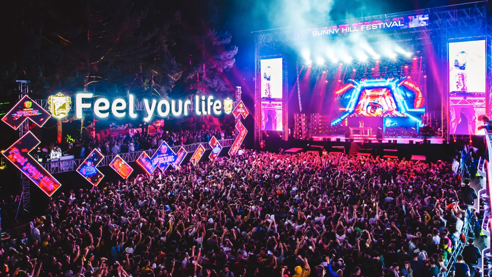
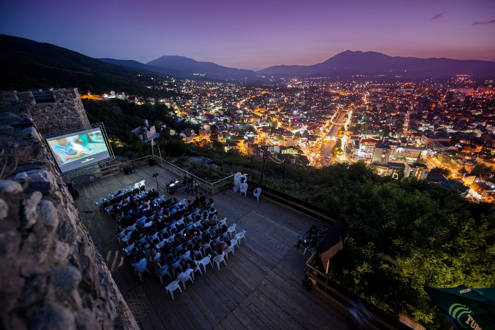
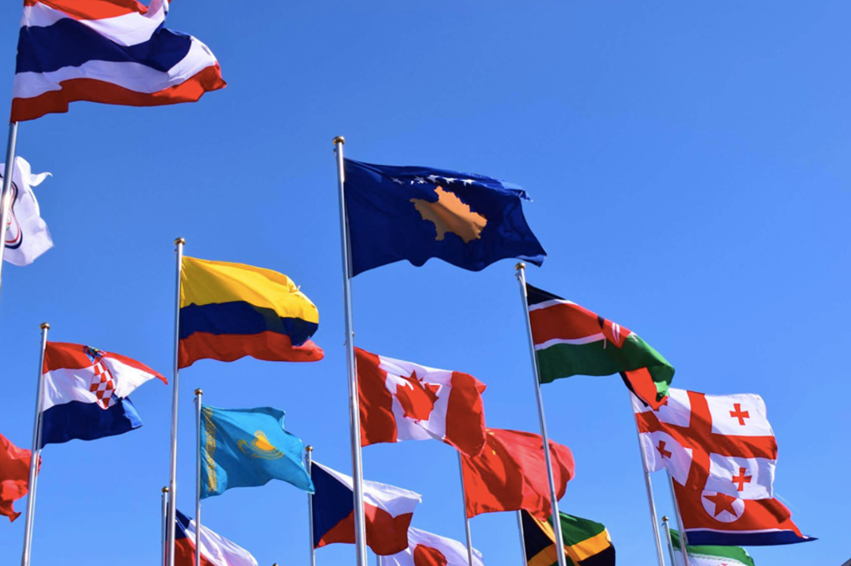
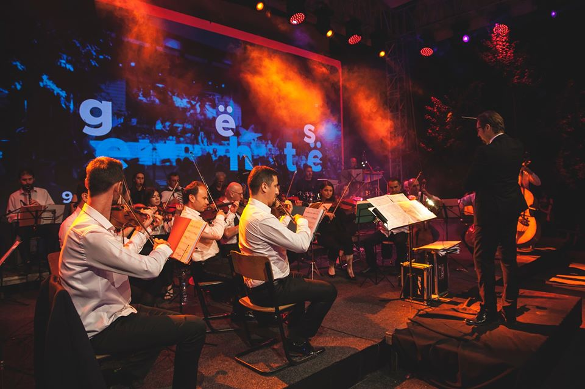

{kind=link}
{kind=link}
We want to attract visitors from all over the world to come and visit our country and enjoy the festivals in summer or winter.When the summer comes, most Kosovars leave their homes to head to the beaches of Albania and Montenegro. However, during the warmer months of the year, there are several reasons to stay in Kosovo. From July to September, there are several interesting festivals taking place in the youngest country of Europe.
| Events and Festivals |
|||
|---|---|---|---|
|  |
SUNNY HILL FESTIVALSunny Hill Festival is an international music festival of the highest standards, one that puts Prishtina on the festival map as a not-to-be-missed cultural place, in a country that loves music and knows how to have fun. We want to invite music lovers from around the world to come and enjoy our country, as well as performances of some of the best-known performers of our modern time and charts. Read more |
PRI FILM FESTIVALPrishtina International Film Festival (PriFest) is a feature film festival set in the youngest country in the Balkans, Kosovo, namely in its capital Pristina. It was founded in 2008, and this year it holds its 11th edition. Prishtina International Film Festival is the most important film event that is held in Kosovo. Vanessa Redgrave supported the first edition by attending and leading the opening ceremony. Read more |
|
|  |
DOKUFESTThe largest film festival in Kosovo, and the most famous, is DokuFest, a cinematographic event dedicated to documentaries and short films. The festival is held in the historical town of Prizren, which is one of the prettiest towns in the Balkan Peninsula. DokuFest features workshops, exhibitions, discussions, masterclasses and live music. Read more |
 |
17 FEBRUARYIndependence Day. Kosovo declared independence from Serbia on Sunday, February 17, 2008, sending tens of thousands of ethnic Albanians streaming through the streets to celebrate what they hoped was the end of a long and bloody struggle for national. The flag displays six white stars in an arc above a golden map of Kosovo on a blue field. They are officially meant to symbolize Kosovo's six major ethnic groups: Albanians, Serbs, Turks, Gorani, Roma and Bosniaks. Read more |
|  |
ZAMBAKU I PRIZRENITZambaku i Prizrenit (The Lily of Prizren), was founded in 1986 from cultural institutions of Kosovo of that time, as the only cultural event that cultivates the urban music genre, such as ballads and serenades. This festival focuses more on the traditional Albanian songs, but some editions have also had performances by other ethnic groups from Kosovo. Read more |
DOKUTECHDigitizing the Human, Humanizing the Digital.DOKU.TECH is an annual event bringing together individuals and tech talents with top-tier international future makers, executives, and thinkers. This conference explores and challenges the social implications of technological innovations through connectivity, content, masterclasses, workshops, and openness while inspiring youngsters by sharing knowledge and experiences. Read more |
{kind=link}
{kind=link}
{kind=link}
{kind=link}
{kind=link}
{kind=link}
| Lorem, ipsum. | Categories |
|---|---|
 |
Kategoria1 Kategoria1 Kategoria1 Kategoria1 Kategoria1 Kategoria1 Kategoria1 Kategoria1 Kategoria1 |
Link headerKategoria1Kategoria1 Kategoria1 Kategoria1 Kategoria1 Kategoria1 Kategoria1 Kategoria1 Kategoria1 |
|
Link headerKategoria1Kategoria1 Kategoria1 Kategoria1 Kategoria1 Kategoria1 |